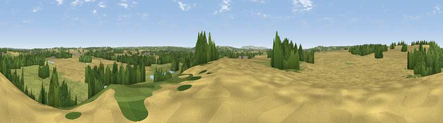

Viewpoint near Hampton Lucy
#31270 in England · top 66% of its area beats it · near Hampton LucyThe view, rendered

A 360° render of this exact spot computed from the terrain model, tree cover and land cover — summer colours, afternoon light, calibrated against photographs of famous viewpoints. Real trees, hedges and buildings will differ in detail.
The panorama
Grey silhouette: terrain skyline in each direction (720 bearings, Earth curvature and refraction included). Dashed green: skyline with trees (+15 m) and buildings (+8 m) as obstacles. Blue strip: how far the ground is visible on each bearing.
Where the view opens
Wedge length = distance to the farthest visible ground on that bearing (vegetation-aware). Rings at 10, 25 and 50 km.
What fills the view
47% grassland · 35% cropland · 16% woodland ·
Angular shares of the visible panorama (visual magnitude), not map area. Landscape diversity 0.47 (0–1 Shannon).
Key numbers
More beautiful places nearby
The staircase of upgrades: each row has a higher view potential than everything closer. Driving times are estimates from straight-line distance, calibrated against real road routing — check an actual route before setting out.
| Place | Direction | Drive | Score |
|---|---|---|---|
| Viewpoint near Wasperton | N · 1 km | ~3 min | 46.8 |
| Viewpoint near Tiddington | WSW · 5 km | ~11 min | 48.6 |
| Viewpoint near Tiddington | W · 5 km | ~11 min | 50.7 |
| Viewpoint near Ettington | S · 6 km | ~13 min | 60.1 |
| Lodge Hill | WNW · 15 km | ~27 min | 64.0 |
| Viewpoint near Northend | ESE · 15 km | ~27 min | 65.3 |
| Viewpoint near Meon Vale | SSW · 15 km | ~27 min | 77.0 |
| Broadway Hill | SSW · 26 km | ~42 min | 77.7 |
52.21984, -1.62559 · source: screening · position refined by local search. Computed location — check access rights before visiting.